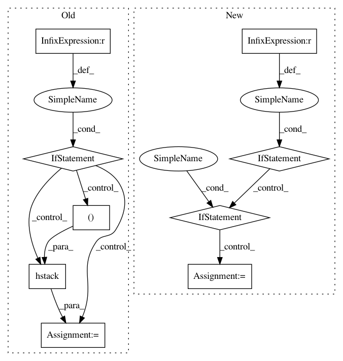

4c3790c4553cef37eae4a4e308307f05772579cf,AutoML2015/models/evaluate.py,,evaluate,#Any#Any#Any#,16
Before Change
Y_optimization_binary[i, label] = 1
Y_optimization = Y_optimization_binary
if task_type == "multilabel.classification":
Y_pred = np.hstack([Y_pred[i][:, 1].reshape((-1, 1))
for i in range(len(Y_pred))])
scoring_func = getattr(libscores, metric)
csolution, cprediction = libscores.normalize_array(Y_optimization, Y_pred)
score = scoring_func(csolution, cprediction, task=task_type)
After Change
Y_optimization_binary[i, label] = 1
Y_optimization = Y_optimization_binary
elif task_type == "binary.classification":
if len(Y_optimization.shape) == 1:
Y_optimization = convert_to_bin(Y_optimization, 2)
scoring_func = getattr(libscores, metric)
csolution, cprediction = libscores.normalize_array(Y_optimization,
Y_optimization_pred)
score = scoring_func(csolution, cprediction, task=task_type)
In pattern: SUPERPATTERN
Frequency: 3
Non-data size: 9
Instances
Project Name: automl/auto-sklearn
Commit Name: 4c3790c4553cef37eae4a4e308307f05772579cf
Time: 2014-12-22
Author: feurerm@informatik.uni-freiburg.de
File Name: AutoML2015/models/evaluate.py
Class Name:
Method Name: evaluate
Project Name: ContextLab/hypertools
Commit Name: dce3b66b54fac2040e826a5a465ff58cf1295e7f
Time: 2017-06-14
Author: andrew.heusser@gmail.com
File Name: hypertools/tools/reduce.py
Class Name:
Method Name: reduce
Project Name: ContextLab/hypertools
Commit Name: 449ccc820a0558d742bc7055bc37c1690dff4496
Time: 2017-06-14
Author: andrew.heusser@gmail.com
File Name: hypertools/tools/reduce.py
Class Name:
Method Name: reduce